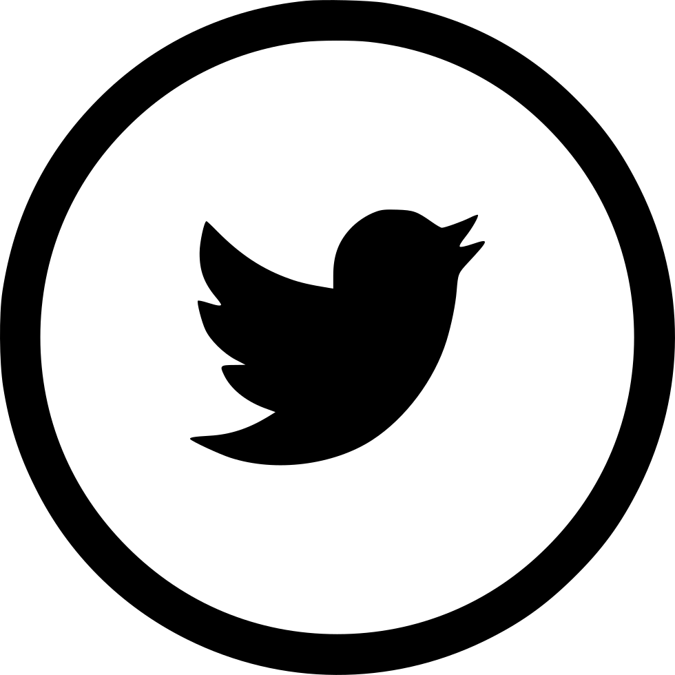
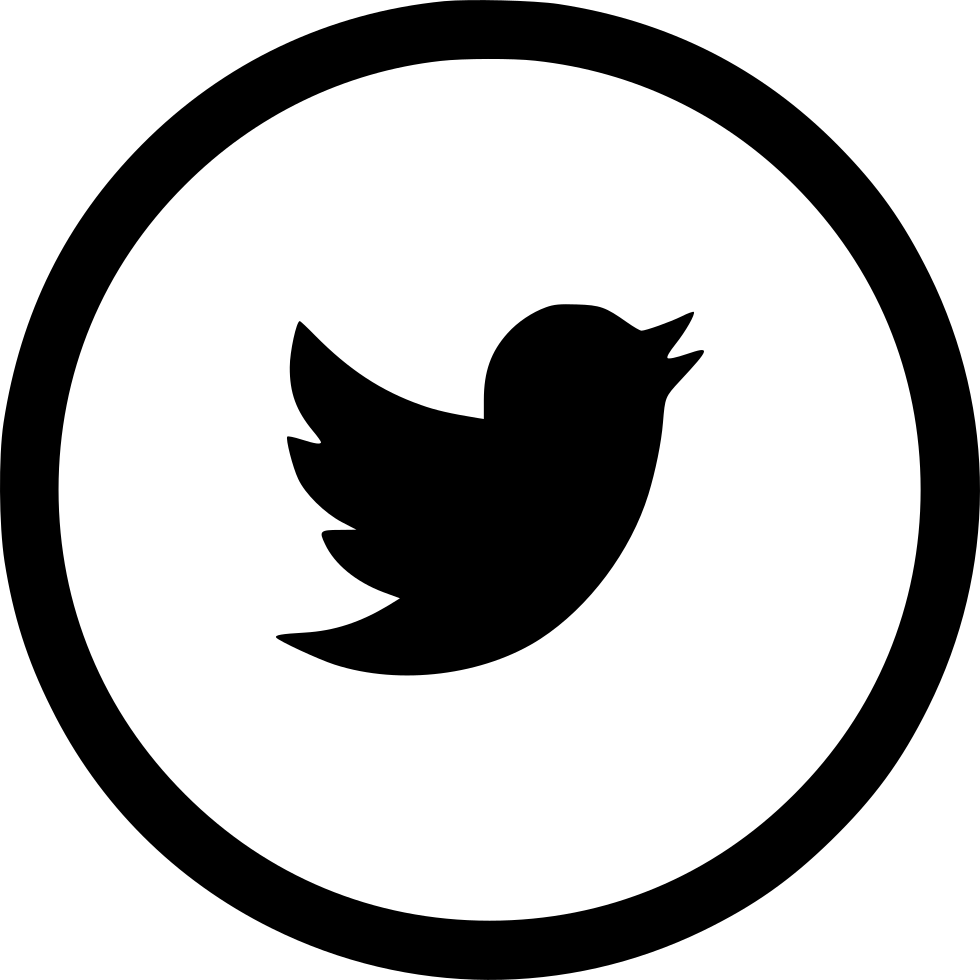

Critical Media Project (CMP) is a free media literacy web resource for educators and students (ages 8-21) that enhances young people’s critical thinking and empathy, and builds on their capacities to advocate for change around questions of identity. CMP has a two-fold mission:
- To raise critical awareness and provide the tools to decode media representations of race, ethnicity, gender, sexuality, socio-economic class, religion, age, and disability, and develop an understanding as to how these identities intersect
- To encourage and offer guidance for students to tell their own stories, create their own representations, and uphold their status as active and engaged participants in civic society.
CMP Learning Objectives
- EXPLORE: To observe and become cognizant of messages about identity that surface in everyday media and culture
- EXPAND: To understand and gain perspective on the historical, social, and political contexts of media representations of different identities
- EXCAVATE & EXPLICATE: To critically decode and develop skills to analyze the meanings (and ideologies) behind various representations of identity across media genres and platforms
- EXPRESS & ENGAGE: To develop and deploy strategies and skills to create one’s own representations, tell own stories, and create counter-narratives
The Critical Media Project has several features that make it particularly unique and useful for instruction:
We believe that the best way to encourage critical media literacy is to provide media examples that can be critically analyzed, and that can further serve as models to inspire, reorient, and challenge. This website is full of rich media examples — clips from movies and television shows, advertisements from billboards and magazines, newspaper articles, online viral videos, comedic satire and more — that students and teachers can watch, analyze and discuss. Our experience is that many other media literacy projects are full of lengthy, text-based descriptions of how and why to conduct media analysis, but they do not necessarily provide a platform that encourages experiential learning and engagement. Intended not as a textbook in itself, but rather as a supplemental resource for teachers and students, this website brings together a wide array of media examples that are also placed in historical and cultural context. To encourage further study, the site frames the media examples alongside original writings, discussion questions, in-class activities, and additional resources–all in one central place.
CMP & USC Annenberg Connection
The input of college-aged students helps to shape the content of the Critical Media Project, making the issues presented particularly relevant to high school students. This platform emerged from a course taught at the University of Southern California’s Annenberg School for Communication by Professor Alison Trope. Students helped direct the project and focused on the issues and topics that they believed were important for high school students to critically analyze. USC Annenberg students continue to use and help develop the site as student-instructors in Los Angeles Unified School District classrooms.
Encouraging Diversity of Opinion
The Critical Media Project is interested in encouraging critical thinking, not telling students precisely what to think. Our aim in this effort is not to impose meaning on the students or teachers who draw from this resource. Instead, we are interested in the promotion of critical thinking (aligned with the Common Core), and in prompting complex and sometimes difficult discussions around the intersections of media, identity, and power. Some media literacy approaches come from a “protectionist” point of view, in which media is seen as a generally harmful force. This approach encourages viewers, educators and parents to be on guard against media’s harmful effects on society. We take a different approach, recognizing instead that there are many problematic aspects of the way media operates and the types of media messages that are disseminated. However, we also suggest that media can be a great source of pleasure, and that media can provide countless opportunities for resistance, especially in media environments in which viewers/consumers can also be producers. We want students to critically analyze the processes through which media are produced and distributed, to take note of the potentials and pitfalls of historical and contemporary media strategies and tendencies, and to ultimately come to their own conclusions about the best way forward.
Promoting Empathetic & Honest Discussions
Please note that some of the materials contained on this website touch on controversial issues, use foul language and discuss adult themes. We believe it is necessary to include media such as this in order to have an open and honest discussion about the politics of identity in historical and contemporary media.
These are all important–but potentially sensitive–topics. We hope you will use the general topic overviews and wide range of media as supplements to your own curriculum, the foundation for independent lesson plans and units, or springboards to promote critical thinking and class discussion. The entire site is designed as a set of building blocks, with the ultimate goal of encouraging critical thinking in the context of thoughtful pedagogy.
We are a growing repository, and are always in the process of uploading more content to the site. We are excited that you are here to take part in this always-expanding venture!
Connect
criticalmediaproject@gmail.com
 
